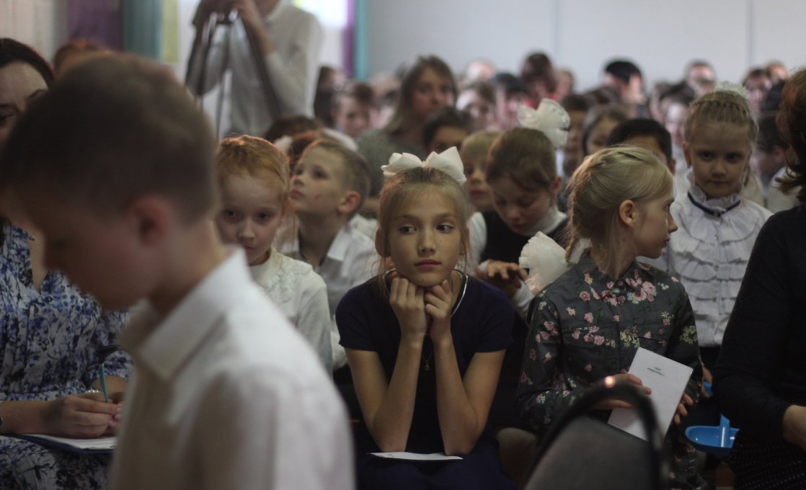

В «Нашей Школе» состоялся ежегодный весенний праздник «Взрослые и дети». Главный и основной принцип праздника — взаимодействие Взрослых и детей, основанное на общем совместном деле. А совместные дела, как известно, объединяют! Традиционно вместе задумывали и готовились к празднику: писали сценарий, читали стихи, готовились к ярмарке, к встрече гостей в своих гостиных, к совместным выступлениям на концерте, но самое главное проживали ситуации, в которых учились действовать, мыслить, помогать, понимать, слышать и принимать... Концерт был кульминацией того принципа, по которому мы живем в «Нашей Школе» — взросло-детское взаимодействие, старше-младшее сотрудничество.
«Мы сохраним тебя, русская речь, великое русское слово». Под этим эпиграфом А. Ахматовой прошёл концерт в двух действиях, посвященный 220-летию со дня рождения А. С. Пушкина.
Основная идея концерта «Творчество и личность А. С. Пушкина как образец бережного отношения к истинным ценностям» определила литературно-музыкально материал, устройство праздника и формат работы от задумки до реализации.
Перед сценаристами не стояло задачи погрузить зрителя в эпоху времени Пушкина. Но необходимо было через отношение поэтов, писателей, композиторов разных времён к личности и творчеству Пушкина показать ценности нашей жизни.
В ходе репетиций много было размышлений над текстами песен и стихов. Как прочитать стихотворение, чтобы зритель не остался равнодушным? Как передать мораль басни, смысл песни? Петь с бережным отношение к слову, русскому языку, как это?
Закончилась первая часть праздника — концерт, начались гостиные, которые классы готовили для родителей и для своих же одношкольников: игровая классов «Дружный» и «Океан», песенная классов «Рудужный» и «Альтаир», интеллектуальные игры классов «Искра» и «Бригантина», «Кухмистерская» классов «Красочный» и «Вектор». Ярмарка с разнообразием товаров ручной работы, которую готовили совместно педагоги и учащиеся классов «Бригантина» и «Солнечный» привлекла внимание всех.
Автор статьи: Николаева Галина Игоревна